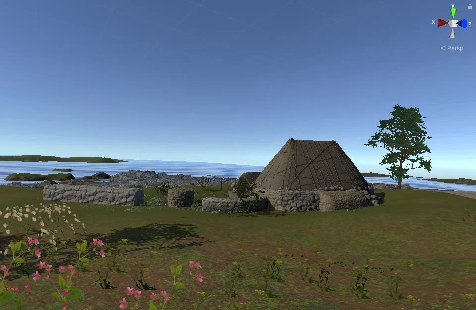
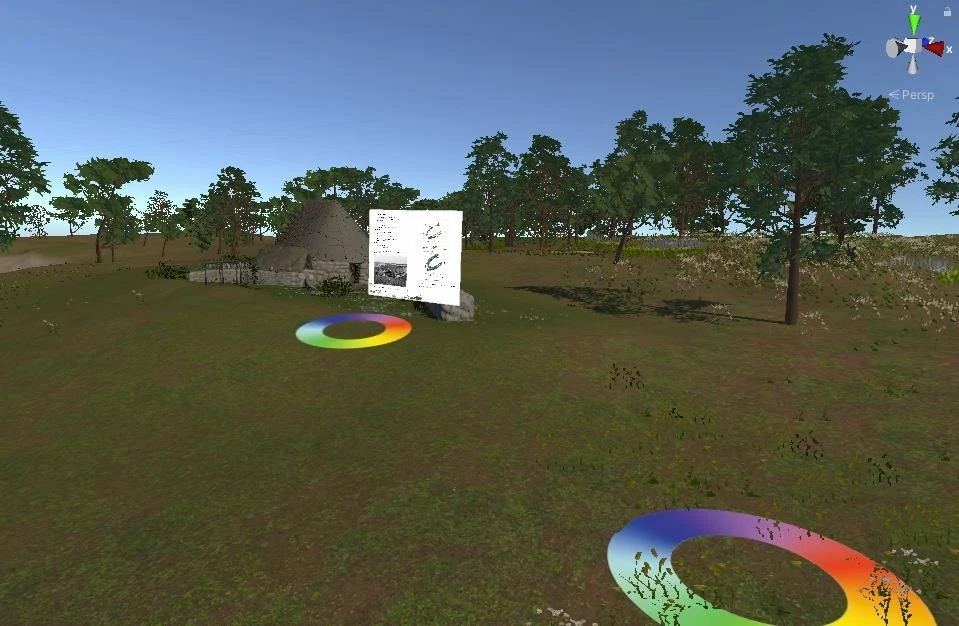
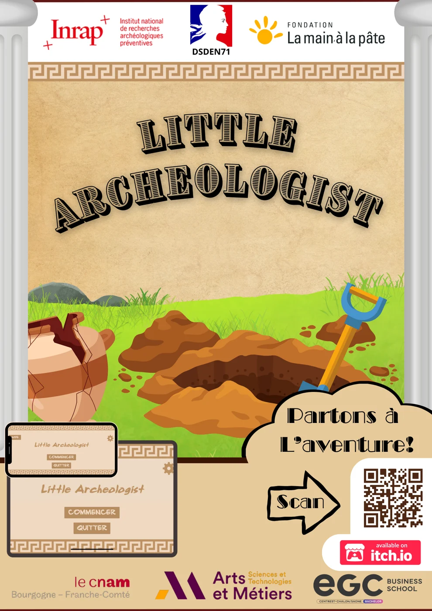

Patrimoine · Environnement 3D · VR
Beg ar Loued
Reconstituer un paysage côtier ancien et le rendre explorable en réalité virtuelle.
- Cadre
- Stage de Master · 2024–2025
- Outil principal
- Unity
- Sujet
- Paysage · Patrimoine · Médiation
Le projet en bref.
- Le besoin
- Replacer la maison de Beg ar Loued dans son paysage côtier ancien et rendre cette reconstitution compréhensible pendant une visite VR.
- Mon rôle
- Reconstituer l’environnement dans Unity, organiser la végétation et intégrer les panneaux et interactions, à partir d’une maison 3D préexistante.
- Le résultat
- Une scène explorable en réalité virtuelle, des panneaux de médiation et une animation de l’évolution du littoral, fondées sur des données et des hypothèses explicites.

01 / Replacer la maison dans son paysage
Replacer la maison dans son paysage
Le site archéologique de Beg ar Loued, dans l’archipel de Molène, disposait déjà d’un modèle 3D de sa maison. Cette base permettait d’observer l’habitat, mais son environnement côtier restait à restituer. Le travail de stage consistait à replacer la maison dans un paysage plausible de l’Âge du Bronze, puis à rendre cet ensemble explorable en réalité virtuelle. Le rivage, la végétation et les espaces autour de l’habitat deviennent ainsi des éléments de compréhension du site.
L’objectif était de construire une scène lisible et documentée, en reliant les données disponibles à des choix de reconstitution. Le paysage devait permettre de comprendre les relations entre la maison et son environnement sans présenter les hypothèses comme des certitudes. La visite devait également apporter des informations au bon moment, à travers des panneaux intégrés dans la scène, tout en laissant la possibilité de parcourir librement les lieux.
02 / Des références de terrain à Unity
Des références de terrain à Unity
Le travail s’appuie sur un modèle numérique de terrain, des photographies de repérage sur l’île de Molène et des repères paléo-environnementaux. Le terrain est transformé en une carte de hauteur puis intégré dans Unity. L’échelle, le relief et le placement de la maison sont ajustés avant de travailler le littoral. Les transitions entre roches, galets, sable et eau servent à rendre la ligne de côte compréhensible depuis plusieurs points de vue.
La végétation est organisée selon un gradient allant du littoral vers les abords de la maison, puis vers un boisement en retrait. Les essences et les densités s’appuient sur les références étudiées et les échanges avec les encadrants. Les textures de sol complètent cette organisation. Le placement des arbres et des arbustes garde des vues sur la maison et le rivage, afin que le paysage reste lisible pendant les déplacements.


03 / Environnement et médiation
Environnement et médiation
Mon travail documenté porte sur la reconstitution de l’environnement côtier, la composition végétale, les textures et la mise en place de la médiation dans Unity. La maison 3D constitue une base préexistante : l’apport présenté ici concerne son environnement et les interactions ajoutées pour la visite. Les captures d’avancement permettent de suivre le passage d’un terrain de travail à une scène intégrant le littoral, la végétation et les espaces de découverte.
Quatre thèmes accompagnent la visite : la maison, le niveau de la mer, la flore et les arbustes. Les panneaux sont associés à des zones d’activation. Ils apparaissent lorsque le visiteur s’approche et disparaissent lorsqu’il s’éloigne. Leur lisibilité, leur distance d’affichage et leur place dans le champ de vision font partie des réglages. Une animation du littoral complète la visite pour illustrer l’évolution du paysage dans le temps.


04 / Explorer le lieu et son évolution
Explorer le lieu et son évolution
La scène permet de parcourir l’environnement reconstitué autour de la maison.
Cette courte animation illustre l’évolution du niveau marin et du trait de côte dans la reconstitution.
05 / Une restitution à expliquer
Une restitution à expliquer
Le résultat prend la forme d’une scène explorable en réalité virtuelle, accompagnée de panneaux d’information et d’une animation de l’évolution du littoral. Le rapport décrit une revue de la visite avec les encadrants à partir d’un parcours enregistré. Les vérifications portaient sur la lecture du paysage, la cohérence de la végétation, l’activation des panneaux et leur lisibilité au cours de la visite. Ces échanges ont servi à ajuster la présentation de l’environnement.
La restitution reste une interprétation construite à partir des données et des hypothèses disponibles. L’intérêt de la visite est aussi de rendre cette interprétation compréhensible, en donnant au visiteur des repères sur ce qu’il observe. Les prolongements envisagés comprennent un enrichissement sonore et l’ajout d’éléments de vie dans la scène. Le projet associe ainsi création d’environnement, intégration technique et médiation du patrimoine.

LIRMM · ÉQUIPE ADVANSE · STAGE DE FIN D’ÉTUDES
Concevoir une expérience VR accompagnée par l’IA.
Prolonger la découverte des parcours immersifs et de leurs interactions.

Gestion de projet · Réalité augmentée
Little Archeologist
Retrouver la médiation archéologique dans une expérience collective en réalité augmentée.